바자회 MST 사용설명서
손님과 운영자를 위한 화면별 안내입니다. QR 접속부터 충전, 결제, 송금, 잔액 확인까지 실제 화면 캡처와 함께 따라가세요.
캡처의 빨간 박스는 해당 단계에서 누를 버튼이나 선택할 항목을 표시합니다. 이미지를 누르면 원본 크기로 볼 수 있습니다.
운영자가 손님과 가게 담당자에게 설명할 때 쓰는 안내서입니다. 화면에 보이는 MST 1 = 1원 상당입니다. 송금·결제·충전은 실제 지갑의 승인과 완료 화면까지 확인해야 끝납니다.
아래 캡처는 대부분 배포된 화면을 2026-11-02에 다시 촬영한 것입니다. 운영자 충전 입력 화면은 2026-10-30에 촬영했습니다. 지갑이 필요한 화면은 ?preview=1 또는 화면 테스트 모드의 예시 주소·잔액을 사용했습니다. 미리보기 QR은 실제 송금에 사용할 수 없습니다.
먼저 보는 전체 흐름
- 손님이 입장 QR을 스캔해 시작 화면을 엽니다.
- MetaMask 설치·지갑 준비·연결을 마치면 내 지갑에서 잔액을 봅니다.
- 충전할 때는 손님의 충전하기 → 받기 QR을 직원에게 보여주고, 직원이 현금 또는 입금 금액을 확인한 뒤 MST 충전에서 보냅니다.
- 결제할 때는 가게 담당자가 가게 운영의 받기 QR을 보여주고, 손님이 가게 결제하기에서 스캔해 금액을 보냅니다.
- 손님과 가게는 각각 내 지갑 또는 가게 운영에서 잔액과 최근 거래를 확인합니다.
가장 쉬운 QR 사용법: 페이지 안의 QR 스캔하기 버튼을 누를 필요는 없습니다. 직원이 손님의 받기 QR을 휴대전화 기본 카메라로 찍으면 MST 충전 페이지가 열리고, 손님이 가게의 받기 QR을 기본 카메라로 찍으면 가게 결제 페이지가 열립니다. 받는 주소가 자동으로 채워지므로 주소와 금액을 확인한 뒤 진행하세요. 일반 브라우저에서 MetaMask로 이어가기 안내가 나오면 그 안내에 따라 앱에서 계속합니다.
1. 입장 QR → 시작 화면 (손님)
화면: https://bazaar.mustree.kr/ 또는 인쇄된 입장 QR
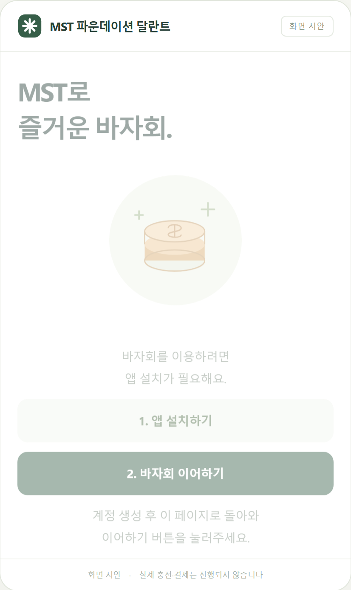
- 휴대전화 카메라로 입장 QR을 찍습니다.
- 1. 앱 설치하기로 MetaMask를 설치하고 지갑을 만들거나 기존 지갑을 가져옵니다. 이미 준비했다면 설치 단계는 건너뜁니다.
- 원래 열어 둔 브라우저 탭으로 돌아와 2. 바자회 이어하기를 누릅니다. 앱이 열리지 않으면 바자회 이어하기를 한 번 더 누릅니다.
- MetaMask에서 지갑 연결 및 Mustree 네트워크 추가·전환 요청을 확인합니다. 준비가 끝나면 내 지갑 화면이 열립니다.
운영자 안내 문구: “QR을 찍고 MetaMask에서 지갑을 준비한 다음, 원래 화면으로 돌아와 ‘바자회 이어하기’를 눌러주세요.”
확인할 점: MetaMask의 비밀 복구 구문과 비밀번호는 직원에게 보여주거나 알려주지 않습니다. 승인 창이 이미 떠 있다면 새 요청을 반복하기 전에 기존 창을 확인합니다.
2. 내 지갑: 잔액과 최근 거래 (손님)
화면: 시작 화면에서 지갑 연결 후 내 지갑
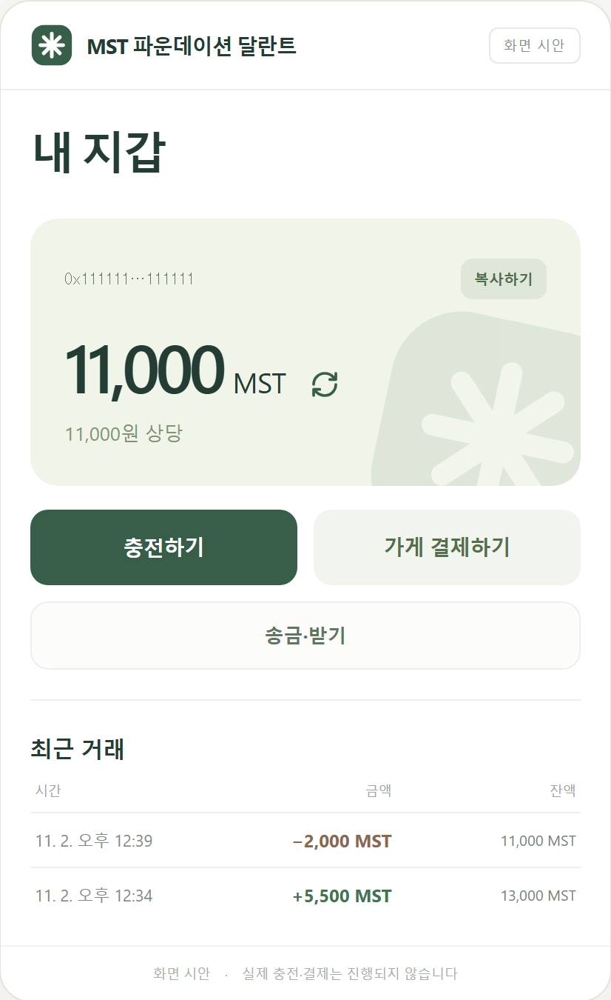
- 큰 숫자가 현재 MST 잔액이고, 그 아래 원 상당은 같은 금액입니다.
- 위쪽의 짧은 지갑 주소 옆 복사하기는 내 주소를 복사합니다.
- 잔액 옆 새로고침 아이콘이나 다시 확인으로 잔액을 새로 읽습니다.
- 최근 거래에는 들어온 금액
+, 나간 금액−, 거래 직후 잔액이 보입니다. 내역 조회가 실패하면 다시 확인을 누릅니다. - 충전하기는 손님의 받기 QR로, 가게 결제하기는 QR 스캔이 열리는 결제 화면으로, 송금·받기는 내 QR과 송금 버튼이 있는 화면으로 이동합니다.
운영자 안내 문구: “여기 큰 숫자가 지금 쓸 수 있는 MST예요. 결제 후에는 새로고침해서 잔액과 최근 거래를 확인해 주세요.”
3. 충전하기: 손님 받기 QR (손님 → 충전 직원)
화면: 내 지갑 → 충전하기
진입: 홈 화면에서 충전하기를 누릅니다.
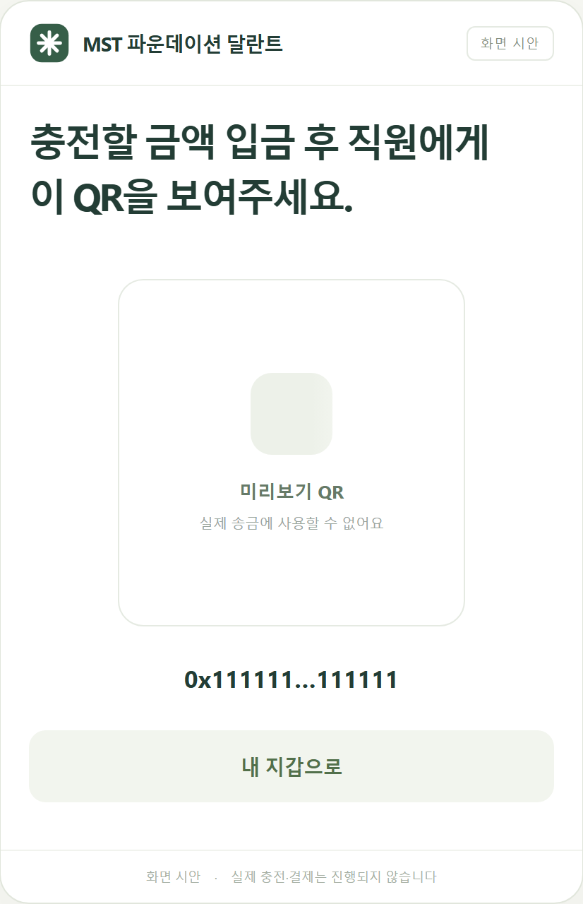
- 손님은 충전할 현금 또는 입금액을 직원에게 전달합니다.
- 화면의 QR을 직원에게 보여줍니다. 직원은 휴대전화 기본 카메라로 이 QR을 찍어 충전 페이지에 바로 들어갈 수 있습니다. QR을 읽을 수 없으면 주소 복사하기로 주소를 전달합니다.
- 직원이 충전을 완료하면 내 지갑으로 돌아가 잔액을 확인합니다.
운영자 확인: 이 QR은 손님 지갑을 받는 대상으로 지정합니다. 충전 금액은 QR에 들어 있지 않으므로 실제 받은 금액을 직원이 따로 입력해야 합니다. 필요하면 주소 복사하기로 전체 주소를 받아 충전 화면의 받는 주소와 대조하세요.
4. MST 충전: 직원 화면 (운영자)
운영자 비밀번호: mustree1234
화면: MST 충전
진입: 홈 화면 맨 아래 MST 파운데이션 달란트 글자를 누르면 운영자 페이지가 열립니다.
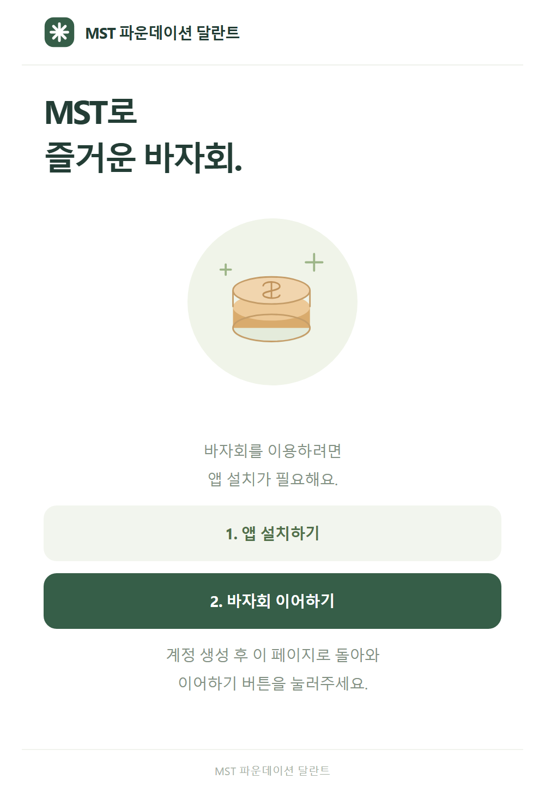
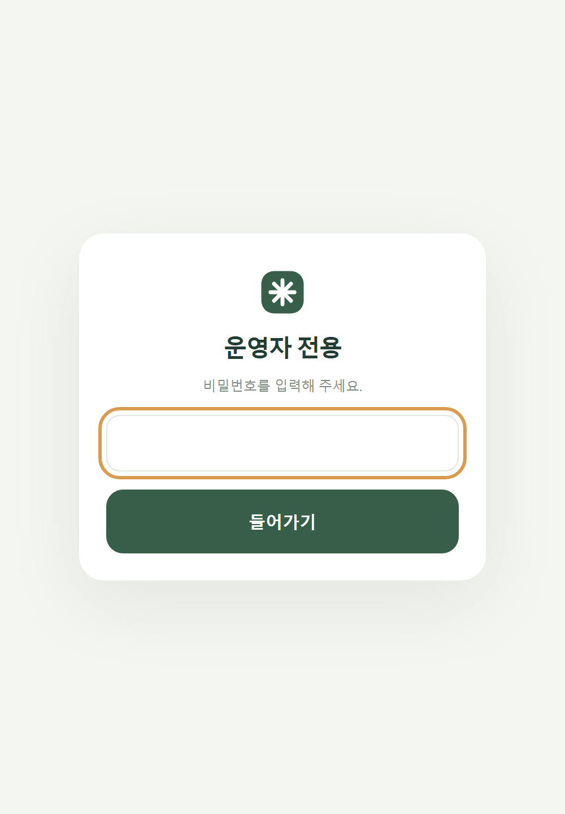
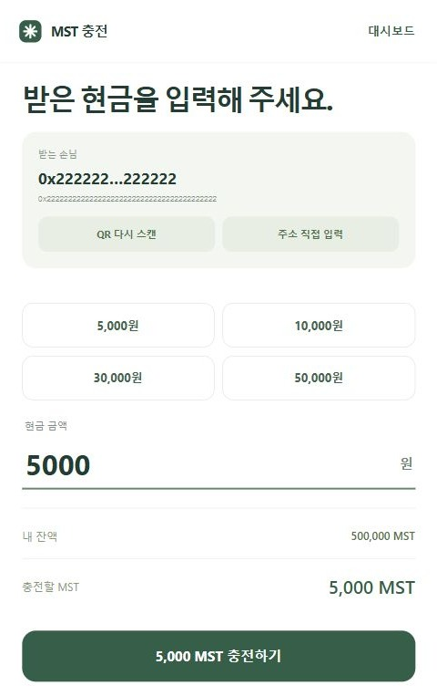
- 운영자 비밀번호를 입력해 들어갑니다. 충전 지갑 연결하기를 누르고 충전용 MetaMask 지갑을 연결합니다.
- 직원 휴대전화의 기본 카메라로 손님의 받기 QR을 찍으면 이 충전 페이지가 열리고 받는 손님 주소가 자동으로 채워집니다. 이미 충전 페이지를 열었다면 QR 스캔하기를 눌러도 됩니다. 카메라를 쓸 수 없다면 이미지 선택 또는 주소 직접 입력을 이용합니다.
- 받는 손님 주소가 손님의 것인지 확인합니다.
- 실제 받은 현금 또는 입금액을 현금 금액에 입력합니다. 5,000·10,000·30,000·50,000원 버튼도 사용할 수 있습니다. 금액은 1원 이상의 정수입니다.
- 받는 손님, 현금 금액, 충전할 MST를 확인한 뒤 충전하기를 누릅니다.
- MetaMask 승인 창에서 내용을 확인하고 승인합니다. 화면이 충전 완료로 바뀌면 손님에게 잔액 확인을 요청합니다. 다음 손님은 다음 손님을 누릅니다.
운영자 안내 문구: “받은 금액과 화면에 입력한 금액이 같은지 확인하고, 손님 QR의 주소로 충전하겠습니다. 완료 화면이 나오면 손님 잔액도 확인해 주세요.”
주의: 충전은 입력한 금액만큼 보내며 자동 보너스는 없습니다. 충전 지갑의 MST 또는 수수료 잔량이 부족하다고 나오면 운영 지갑을 보충한 뒤 진행합니다. 비밀번호 화면은 단순 접근 가림막이므로 반드시 올바른 MetaMask 계정이 연결됐는지 확인하세요.
5. 대시보드: 충전·송금·회수 확인 (운영자)
화면: 운영 현황, 충전 화면 상단의 대시보드
진입: MST 충전 화면 오른쪽 위의 대시보드를 누릅니다.
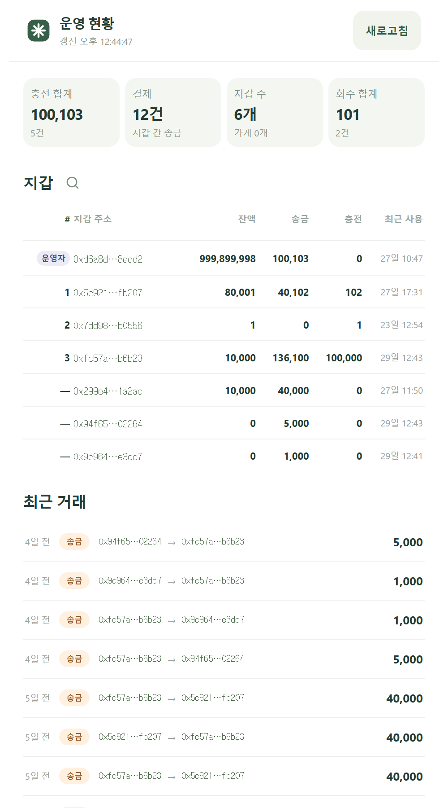
- MST 충전 화면 오른쪽 위의 대시보드를 누릅니다. 운영 현황은 지갑 연결 없이 읽을 수 있습니다.
- 맨 위 카드에서 충전 합계, 결제, 지갑 수, 회수 합계를 확인합니다. 여기서 ‘결제’는 지갑 간 송금 건수입니다.
- 지갑 표에서 각 지갑의 잔액·송금·충전·최근 사용을 봅니다. 돋보기 버튼으로 주소를 검색하거나 표 머리글을 눌러 정렬합니다.
- 지갑 행을 누르면 전체 주소, 거래 수와 남은 수수료 등 상세 정보가 열립니다. 복사로 주소를 복사하고, 필요한 지갑만 가게로 설정 또는 운영자로 설정합니다.
- 아래 최근 거래에서 보낸 지갑 → 받은 지갑과 금액을 확인합니다. 최신 정보가 필요하면 오른쪽 위 새로고침을 누릅니다.
운영자 확인: ‘회수’ 금액은 운영 지갑으로 들어온 송금입니다. 지갑 표의 회수 태그는 운영 지갑으로 보낸 뒤 그 지갑 잔액이 0이 됐을 때 붙고, 나중에 MST를 다시 받으면 사라집니다. 가게·운영자 지정은 지정한 휴대전화 브라우저에만 저장되므로 다른 기기에는 자동 반영되지 않습니다.
6. 가게 운영: 결제받을 QR과 가게 잔액 (가게 담당자)
화면: 가게 운영 또는 홈 화면의 송금·받기
진입: 홈 화면에서 송금·받기를 누릅니다.
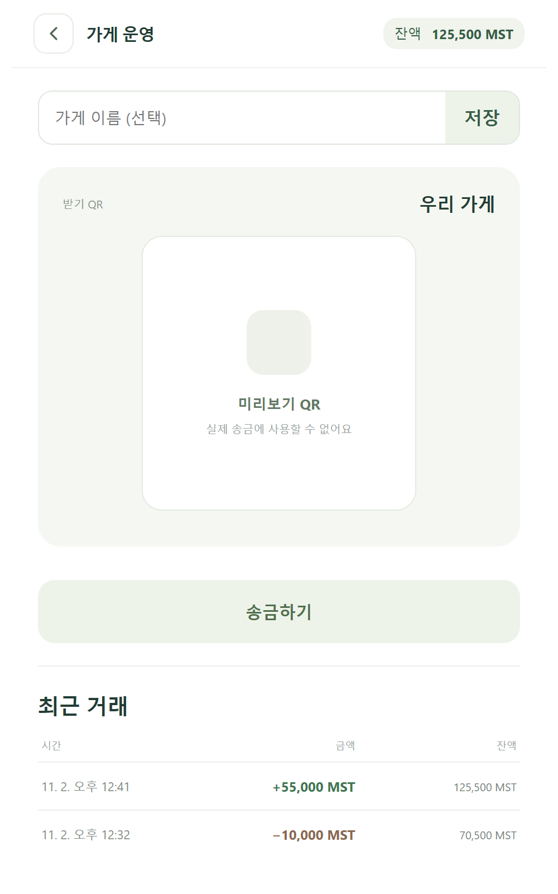
- 가게용 MetaMask 지갑으로 가게 지갑 연결하기를 누릅니다.
- 원하는 경우 가게 이름 (선택)을 입력하고 저장을 누릅니다. 손님의 결제 화면에 이 이름이 표시됩니다.
- 받기 QR을 손님에게 보여줍니다. 손님은 휴대전화 기본 카메라로 QR을 찍어 결제 페이지에 바로 들어갈 수 있고, 결제받을 가게 주소가 자동으로 채워집니다.
- 상단 잔액과 최근 거래에서 입금 여부를 확인합니다. 잔액은 화면이 열려 있는 동안 자동으로 확인되며, 상단 잔액을 눌러 직접 새로고침할 수도 있습니다.
- 가게 지갑에서 다른 지갑으로 보낼 때는 송금하기를 누릅니다.
운영자 안내 문구: “가게 QR을 손님에게 보여주세요. 손님이 결제 완료 화면을 본 다음, 가게 화면의 잔액이나 최근 거래에서 받은 금액을 확인해 주세요.”
확인할 점: 가게 이름은 QR에 표시할 이름이며 결제 대상은 연결된 가게 지갑 주소입니다. 가게 지갑 계정을 바꾸면 QR 대상도 바뀌므로 영업 중에는 연결 계정을 확인하세요.
7. 가게 결제: QR 스캔과 송금 (손님)
화면: 내 지갑 → 가게 결제하기, 또는 가게 QR을 휴대전화로 직접 찍어 열린 가게 결제
진입: 홈 화면에서 가게 결제하기를 누릅니다.
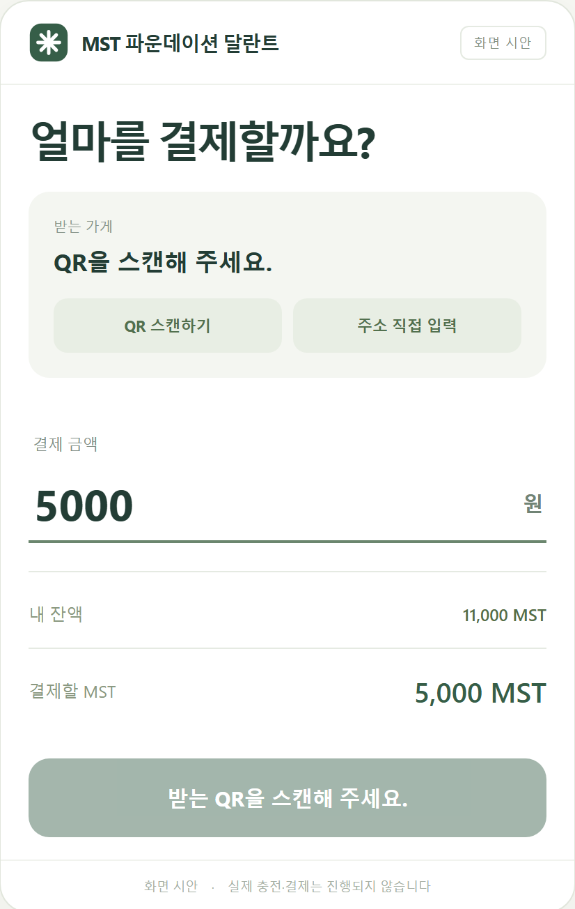
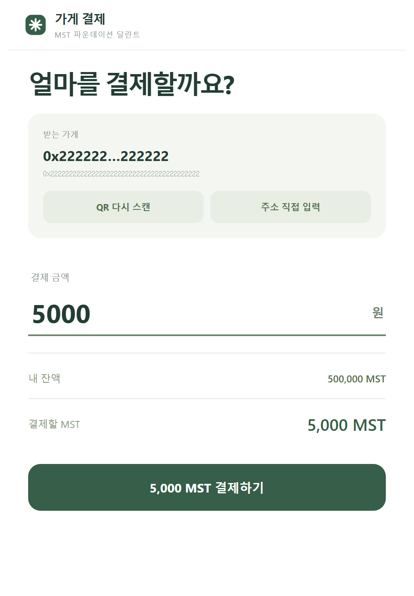
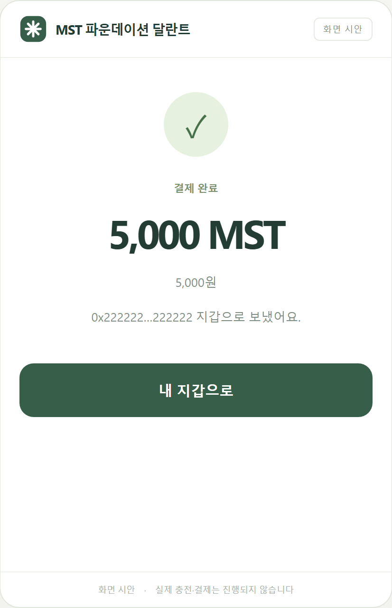
- 휴대전화 기본 카메라로 가게의 받기 QR을 찍으면 이 결제 페이지가 바로 열리고 받는 가게가 자동으로 채워집니다. 이미 결제 페이지를 열었다면 QR 스캔하기를 눌러도 됩니다. 카메라가 안 되면 이미지 선택 또는 주소 직접 입력을 선택합니다.
- 받는 가게 이름과 주소를 확인합니다. QR을 잘못 읽었다면 QR 다시 스캔을 누릅니다.
- 결제 금액을 원 단위 정수로 입력합니다. 한 번에 최대 10,000,000원입니다.
- 내 잔액과 결제할 MST를 확인한 뒤 결제하기를 누릅니다.
- MetaMask에서 거래를 승인하고 결제 완료 화면을 기다립니다. 내 지갑으로 돌아가 잔액을 확인하고, 가게 담당자도 받은 금액을 확인합니다.
운영자 안내 문구: “가게 QR을 읽고 받는 가게와 금액을 확인한 다음, MetaMask에서 승인해 주세요. ‘결제 완료’가 나올 때까지 기다려 주세요.”
잔액 부족: 화면의 충전하기를 누르면 손님 받기 QR로 돌아갑니다. 수수료 잔액 부족 안내가 나오면 직원에게 충전을 요청합니다.
8. 일반 송금: 가게 지갑에서 보내기 (가게 담당자)
화면: 가게 운영 → 송금하기 (/pay.html?mode=transfer)
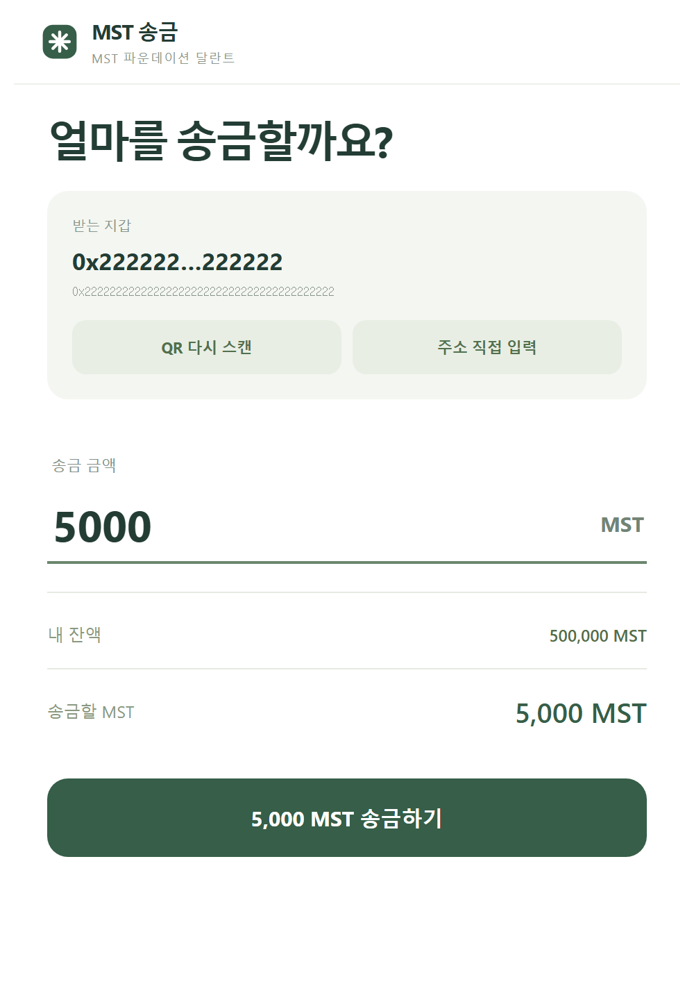
- 받을 사람 또는 운영자의 QR을 스캔하거나 주소 직접 입력을 누릅니다.
- 받는 지갑 주소를 확인하고 송금 금액을 MST 정수로 입력합니다.
- 송금할 MST를 확인한 뒤 송금하기를 누르고 MetaMask에서 승인합니다.
- 송금 완료 화면이 나오면 운영 화면으로 돌아가 잔액과 최근 거래를 확인합니다.
남은 금액 회수: 바자회 운영 방침에 따라 손님이 남은 MST를 현금으로 돌려받는 경우, 운영자가 알려 준 운영 지갑 주소로 손님 지갑에서 송금해야 합니다. 현재 손님 내 지갑에는 일반 송금 버튼이 없으므로, 운영자가 일반 송금 화면을 안내하고 손님 지갑으로 열었는지 확인합니다. 운영 지갑의 수령과 금액을 확인한 뒤 현금을 지급합니다.
현장에서 자주 묻는 상황
| 화면의 상황 | 안내할 행동 |
|---|---|
| MetaMask 연결·네트워크 승인 대기 | MetaMask에 이미 열린 승인 요청을 먼저 확인합니다. 취소했거나 닫았다면 화면의 다시 요청 또는 지갑 연결 다시 시도를 누릅니다. |
| QR 카메라가 열리지 않음 | 카메라 권한을 허용합니다. 계속 안 되면 이미지 선택이나 주소 직접 입력을 씁니다. |
| 잔액이 예전 금액으로 보임 | 손님은 내 지갑의 새로고침, 가게는 상단 잔액을 누릅니다. 최근 거래가 오류라면 다시 확인을 누릅니다. |
| ‘확인하고 있어요’가 오래 지속됨 | 같은 결제·충전을 다시 보내지 않습니다. 화면의 결과 다시 확인으로 기존 거래 결과를 확인하고, 필요하면 해당 지갑의 잔액·최근 거래도 확인합니다. |
| 지갑 통신이 불안정함 | 와이파이와 모바일 데이터를 바꿔 보거나 MetaMask에서 연결 상태를 확인한 뒤 다시 시도합니다. |
| 손님 잔액 또는 수수료 잔액 부족 | 직원 충전을 요청합니다. 충전 완료 후 손님 화면을 새로고침합니다. |
운영 전 확인
- 인쇄된 입장 QR, 손님 받기 QR, 가게 받기 QR을 서로 바꿔 안내하지 않습니다.
- 직원 충전용 MetaMask 계정과 가게용 MetaMask 계정이 맞는지 확인합니다.
- 테스트할 때 URL에
?preview=1이 있으면 미리보기이므로 실제 송금 결과로 취급하지 않습니다. - 초기 발행·네트워크·수수료 설정을 바꿔야 할 때만
setup.html과 배포 절차를 따릅니다. 현장 충전·결제에setup.html은 쓰지 않습니다.